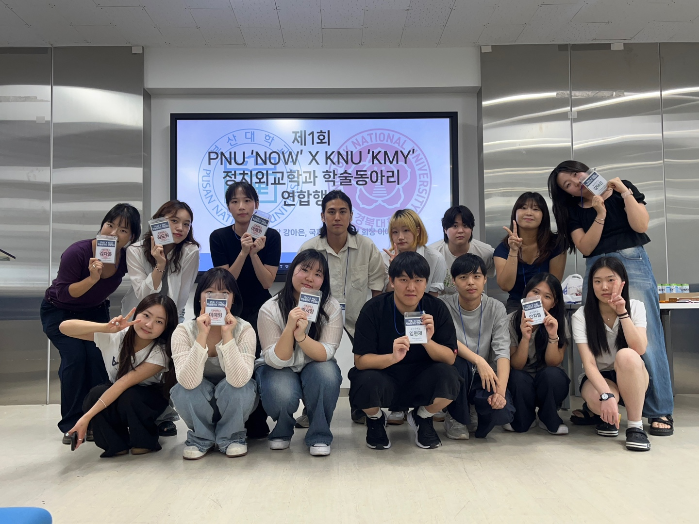

활동 개요
국제문제연구회는 세계 질서와 외교·안보 이슈를 중심으로 심층적인 학문적 탐구를 수행하는 학술 연구회입니다. 매 학기 정기 세미나를 통해 동아시아 정세, 국제기구의 역할, 인권 외교 등을 주제로 토론을 진행하며, 타 대학 학회와의 공동 학술제도 주관합니다.
- 국제정치 세미나 및 토론 (매월 1회)
- 부산대 학술동아리와 공동 학술제 개최
- ‘동아시아 정세와 한국의 외교 전략’ 세션 운영

← 주요 활동으로 돌아가기